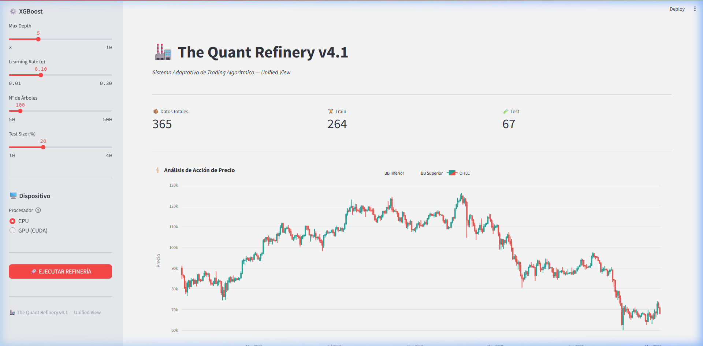
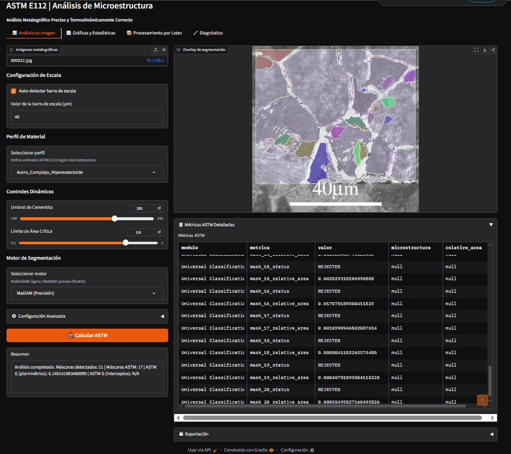
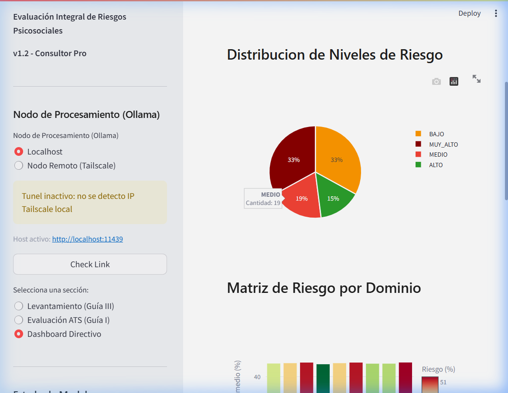

JOSE ADRIAN
GARCIA GARAVITO
AI Systems & Data Engineering Analyst
Engineer building production-grade AI pipelines at the intersection of scientific computing and industrial automation. Operates at the boundary between domain science and deployable code.
Project_Log
FILTER: ALL_SYSTEMS_ACTIVE
Automated OCR Compliance Pipeline
2025—PRESENTBuilt dual-format OCR ingestion pipeline processing Mill Test Certificates against 12+ metallurgical norms, eliminating manual QA review.

Computer Vision Segmentation System
Deployed GPU-accelerated instance segmentation pipeline reducing image analysis time from 45 minutes to under 5 seconds per sample on ASTM E112/G1 datasets.

SEM Degradation Visual Computation Analysis
Sistema de Caracterizacion de Microestructuras (NMC811) orientado al analisis visual de degradacion en imagenes SEM. Estado actual: en desarrollo, con integracion de UI pendiente.
NLP Compliance Automation System
Built hybrid NLP system combining BETO embeddings and RAG retrieval to automate psychosocial risk assessment per NOM-035-STPS-2018.

AI Operations Infrastructure
Deployed webhook-based job analysis pipeline and automated research monitor with sequential rate-limit-aware request chaining.
Technical_Stack
Languages
- PythonCORE
- SQLDATA
- JavaScript (n8n)AUTO
ML & Optimization
- PyTorchDL
- XGBoostML
- scikit-learnSTAT
- Bayesian OptimizationOPT
Computer Vision
- OpenCVCORE
- MobileSAMSEG
- ONNX RuntimeINF
- CUDA 12.xACC
Data Engineering
- pandasDATA
- SQLiteDB
- DockerOPS
- n8n / Streamlit CloudAPP
Career_Sequence
Data Automation Engineer (Freelance)
Enterprise AI Systems
- 01Delivered B2B data cleaning and validation pipelines; improved contact database deliverability from 50% to 97% using Python ETL workflows.
Web Operations & Digital Systems
Global Tech Solutions
- 01Deployed e-commerce platform and digitized inventory database, modernizing operational data infrastructure for retail business.
Academic_Foundation
FIME - UANL
Facultad de Ingeniería Mecánica y Eléctrica
B.Eng. Materials Engineering (IMT)
6th semester. GPA maintained for international mobility eligibility.
Distinctions
Resourcefulness Prize
TMS BladesmithingTMS Bladesmithing Competition
Awarded for demonstrating exceptional creativity and innovation in the face of limited resources. Recognized for accomplishing significant technical results without extensive financial or institutional support.
verified Sponsored by Jeff Wadsworth
EF SET English Certificate
08 Jan 2026C1 Advanced | 68/100
Certified English proficiency in reading and listening for technical and professional communication.
verified EF Standard English Test
INITIATE_COLLABORATION
Looking for advanced AI infrastructure and systems engineering expertise? Let's discuss your architectural needs.